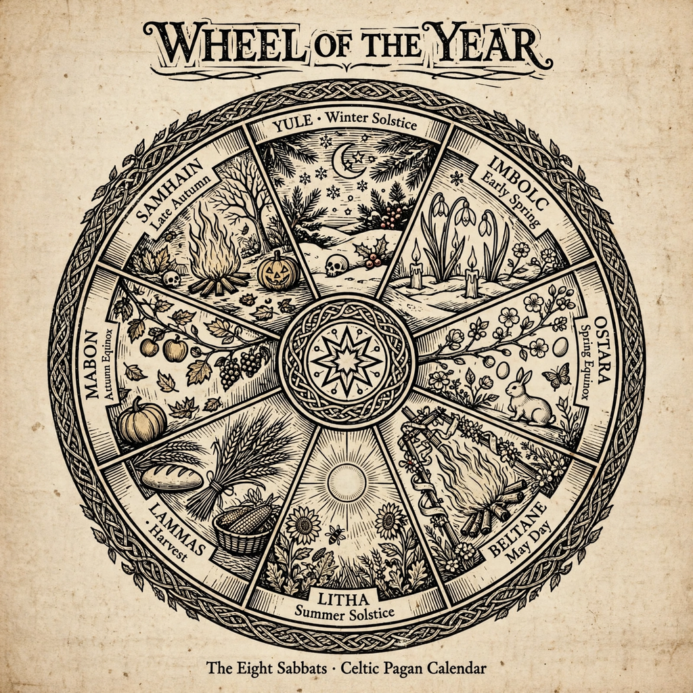

From Wikipedia, the free encyclopedia

| Wheel of the Year | |
|---|---|
| Type | Annual cycle of seasonal festivals |
| Observances | 8 sabbats: 4 solar festivals, 4 fire festivals |
| Observed by | Wiccans and many modern Pagans |
| Developed | Mid-20th century, England |
| Key figures | Gerald Gardner, Ross Nichols |
The Wheel of the Year is an annual cycle of seasonal festivals, observed by many modern Pagans, consisting of the year's chief solar events — the solstices and equinoxes — and the midpoints between them. British Pagans in the mid-20th century, principally Gerald Gardner, founder of Wicca, and Ross Nichols, founder of the Order of Bards, Ovates and Druids, combined the four Celtic fire festivals with the four solar festivals of Germanic and Anglo-Saxon tradition to create a unified eightfold cycle. The festivals are collectively known in Wicca as sabbats.
| Festival | Approx. date (N. Hemisphere) | Type | Significance |
|---|---|---|---|
| Samhain | 31 Oct – 1 Nov | Fire festival | Celtic new year; honouring the dead; end of harvest |
| Yule (Midwinter) | 21 Dec (winter solstice) | Solar | Shortest day; rebirth of the sun |
| Imbolc | 1–2 Feb | Fire festival | First stirrings of spring; associated with the goddess Brigid |
| Ostara (Spring equinox) | 20–21 Mar | Solar | Balance of light and dark; fertility of spring |
| Beltane | 30 Apr – 1 May | Fire festival | May Day; fertility, bonfires, cattle driven between fires |
| Litha (Midsummer) | 21 Jun (summer solstice) | Solar | Longest day; height of the sun's power |
| Lughnasadh / Lammas | 1 Aug | Fire festival | First harvest of grain; associated with the god Lugh |
| Mabon (Autumn equinox) | 22–23 Sep | Solar | Second harvest; thanksgiving; balance before the dark half of the year |
The four Celtic fire festivals — Samhain, Imbolc, Beltane, and Lughnasadh — are attested in early Irish literature and survived in folk custom across Ireland, Scotland, and Wales. The solstices and equinoxes were marked in Anglo-Saxon and Germanic tradition with names such as Yule and Litha, recorded by the Venerable Bede. However, no historical society is known to have celebrated all eight festivals together as a single cycle. The unified Wheel was a 20th-century synthesis: Gardner's Wicca initially observed the four fire festivals, and by the late 1950s the four solar festivals had been added, a development Gardner and Nichols — friends who belonged to each other's orders — appear to have worked out between them. The names "Ostara" and "Mabon" for the equinoxes were popularised later, in the 1970s, by American Pagan writers such as Aidan Kelly.
In Wiccan teaching the Wheel is also a mythic cycle. The Goddess is followed through her phases — maiden, mother, and crone — while the God is born at Yule, grows to maturity, becomes consort to the Goddess at Beltane, is sacrificed at the grain harvest, and dies at Samhain to be reborn again. A related myth, adapted from Sir James Frazer's The Golden Bough and Robert Graves's The White Goddess, tells of the Oak King and Holly King who battle at the solstices for dominion over the waxing and waning halves of the year. These narratives give the festivals a devotional framework linking the agricultural seasons to themes of birth, death, and renewal.
Sabbats are marked with rituals, feasting, seasonal crafts, and outdoor observance; rituals often include casting a circle, invoking the Goddess and God, symbolic enactments (such as lighting bonfires at Beltane or leaving offerings for ancestors at Samhain), and a simple feast of cakes and ale. Pagans in the Southern Hemisphere commonly shift the festivals by six months so that they match local seasons — celebrating, for example, Samhain on 1 May. Many secular and folk celebrations (Halloween, May Day, Midsummer, Christmas/Yule customs) overlap with or derive from the same seasonal turning points.